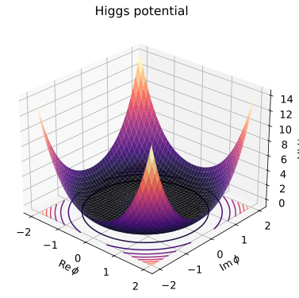

本页目录
粒子 II · 电弱统一与 Higgs 机制
对标：Halzen & Martin §13–15 / Peskin §20 / Langacker ｜ 前置：pp-01、asm-01（对称破缺）、cm-02（Anderson–Higgs 原型） 标准模型的收官难题：规范原理要求规范玻色子无质量（质量项破坏规范不变），而弱力的 \(W/Z\) 重达 80–90 GeV。答案是二十世纪物理的压轴戏法——对称性自发破缺 + 规范场"吃"Goldstone 模。凝聚态（cm-02 Meissner）先排练、粒子物理正式公演、2012 年 LHC 交付实验句号。

学习层：先猜哪个中性组合无质量
1. 预测门：矩阵的零方向会是谁？
本页实验固定一个树级、单个 Higgs \(SU(2)_L\) 双重态的有限模型。给定 \(g,g',v\)，先预测中性基底 \((W^3,B)\) 的质量矩阵是否有零特征值、正确的 Weinberg 角是否把它对角化，以及 \(v=0\) 或错误混合角会报告什么。提交五项预测前，数值账本和 SVG 结果保持隐藏。
2. 最小推导：先把规范荷写出来
对于泛 \(U(1)\) 复标量，若
则 \(|D\phi|^2\) 的矢量质量项是
因此泛 \(U(1)\) 并不自动给出 \(gv/2\)；那个因子来自表示/生成元归一化。对 SM 双重态 \(\Phi=(0,v/\sqrt2)^T\)、\(T^a=\tau^a/2\)、\(Y=1/2\)，中性质量项才是
其零方向与重方向分别是
其中 \(\tan\theta_W=g'/g\)。实验会把数值本征分解与这些解析核对逐项放在同一张账本里。
3. 反例、边界与迁移
- 错误混合角：矩阵的本征值仍然不变，但把错误的 \(A/Z\) 旋转代回去会留下非零的非对角元；这不是一个新的物理光子质量。
- \(v=0\)：整个质量矩阵为零，\(m_W=m_Z=m_\gamma=0\)；中性本征基由质量矩阵选不出来，不能把任意角度称为唯一的物理混合角。
- 范围：这是树级质量生成机制的代数审计，忽略圈修正、重整化方案、额外 Higgs 多重态和完整标准模型参数拟合；调节参数得到的曲线不是实验测量。
JavaScript 失效时的静态 fallback：默认取 \(g=0.65\)、\(g'=0.35\)、\(v=246\,\mathrm{GeV}\)。令 \(r=\sqrt{g^2+g'^2}\)，则
解析特征值是 \(0\) 与 \(v^2r^2/4\)，所以 \(m_\gamma=0\)、\(m_W=gv/2\approx79.95\,\mathrm{GeV}\)、\(m_Z=vr/2\approx90.80\,\mathrm{GeV}\)。\(\theta_W=\arctan(g'/g)\approx28.30^\circ\)，\(\sin\theta_W=g'/r\)、\(\cos\theta_W=g/r\)，且两条电荷核对都给 \(e\approx0.308\)：
把角度故意偏移会留下非零旋转后非对角元；设 \(v=0\) 则矩阵与三个质量都为零且混合基不由质量项唯一确定。这里的数字是树级单双重态模型的计算结果，不是测量值或完整 SM 拟合。
1. 病灶：质量与规范的冲突
规范场的质量项 \(\tfrac12m^2A_\mu A^\mu\) 在 \(A_\mu\to A_\mu-\partial_\mu\alpha/e\) 下不保持不变——手写质量等于谋杀规范对称，并连带毁掉可重整性（🔗 qft-03 §3 的判据）。
费米子同样违宪：\(SU(2)_L\) 只作用于左手场，故 \(m\bar\psi_L\psi_R\) 不是不变量（pp-01 的宇称破坏结构使左右手份属不同表示）。
结论：标准模型里"质量"整体违宪，需要一个合法的来源。
2. 自发破缺与 Goldstone 定理
取复标量场，势 \(V=-\mu^2|\phi|^2+\lambda|\phi|^4\)（\(\mu^2>0\)）。真空不在原点，而在
定律对称、真空选边——这是 asm-01 铁磁的场论版。
Goldstone 定理【推导要点】：写 \(\phi=\tfrac{1}{\sqrt2}(v+h)e^{i\theta/v}\)，代入 \(V\)：
- 径向 \(h\) 获得质量 \(m_h^2 = 2\lambda v^2\)（帽底的曲率）；
- 角向 \(\theta\) 在势中完全不出现 → 无质量的 Goldstone 玻色子（沿帽檐运动零成本）。
一般表述（有前提）：对相对论性理论中的内部连续对称自发破缺，每个破缺生成元对应一个 Goldstone 模。凝聚态是非相对论性系统，色散、约束和时空对称混合会改变计数，不能把“一个生成元一个模”机械套用到所有声学声子或磁振子。
麻烦：自然界没有观测到这些无质量标量粒子。
3. Higgs 机制：规范场吃掉 Goldstone
关键转折：若被破缺的是局域（规范）对称。 对泛 \(U(1)\) 写 \(D_\mu=\partial_\mu-igqA_\mu\)，并用 \(\phi=(v+h)e^{i\theta/v}/\sqrt2\) 参数化真空附近的场：
展开最后一项才得到 \(\tfrac12g^2q^2v^2A_\mu A^\mu\)；因此规范场质量是 \(m_A=gqv\)，而不是在未声明归一化时自动写成 \(gv/2\)。
两件事同时发生：
- 规范场获得质量 \(m_A = gqv\)——来自与真空凝聚的耦合，而非手写，规范不变性从未被破坏；只有在明确给出表示/生成元归一化后，才可把它改写成某个 \(gv/2\) 的特例；
- 交叉项 \(\partial_\mu\theta\,A^\mu\) 可用规范变换消去（幺正规范 \(\theta\to0\)）——Goldstone 模被吸收，变成有质量矢量场的纵向极化分量。
自由度守恒是最好的检验：无质量矢量 2 个极化 + 1 个 Goldstone = 有质量矢量 3 个极化 ✓。"光子吃了 Goldstone 长胖"。
与 cm-02 的会师：超导体中光子获得质量（Meissner 效应、穿透深度 \(\lambda_L\)）正是同一机制——超导体就是电磁 \(U(1)\) 的 Higgs 相。粒子物理的 Higgs 是它的真空版本。本站两大板块在此握手。
4. 电弱落地：Weinberg–Salam
Higgs 场取 \(SU(2)_L\) 二重态，破缺模式
四个生成元破缺三个，故三个 Goldstone 被吃掉：
\(v=246\) GeV 由弱衰变率（费米常数 \(G_F\)）定标。
可检验的预言链：
光子 = 未破缺的那个组合（\(A_\mu = \sin\theta_W W^3_\mu+\cos\theta_W B_\mu\)），保持无质量 ✓。LEP 的高精度测量全面验证了这套关系【引用】。
费米子质量：Yukawa 耦合 \(-y\,\bar\psi_L\phi\,\psi_R\) 是合法的不变量（\(\phi\) 恰好补齐 \(SU(2)\) 指标），破缺后给
在树级、单个 Higgs 双重态的 SM 中，\(W/Z\) 与带 Yukawa 的带电费米子质量由 \(v\) 乘以各自的耦合生成；这不等于把质子质量写成某个 \(y_pv\)，因为质子质量主要来自 QCD 束缚能。最小 SM 中微子无质量，观测到的中微子质量属于扩展边界；而 Yukawa 耦合从顶夸克到电子的巨大等级本身没有解释【第三档悬案】。
夸克混合：Yukawa 矩阵非对角化导致 CKM 矩阵，其复相位是夸克扇区的 CP 破坏源之一；完整 SM 还允许强 CP 的 \(\theta\) 项，若纳入有质量中微子的扩展，轻子混合还会带来额外相位。CKM 破坏的大小不足以解释宇宙的重子不对称（§5）。
5. 2012 判决与标准模型的边界
LHC 在 125 GeV 处发现新粒子，其产生率与各衰变道分支比在测量不确定度内总体与标准模型 Higgs 预期相容（诺奖 2013）。
最关键的指纹：在树级 SM 结构中，带质量粒子的 Higgs 耦合与其质量成正比；实验检验的是带有不确定度、圈修正和 QCD 修正的相容性，不是要求每个数据点严格落在一条无误差直线上（§6 例 2）。
诚实的边界清单：
成就：在已经检验的能标和观测量上，标准模型对大量非引力现象给出高度成功、可重复的计算；不同观测量的理论误差、实验误差与适用范围不同，不能压成一个统一的精度口号。
已知的未完：
- 中微子质量（标准模型原版预言为零，观测到振荡 → 必须扩展，pp-01）；
- 暗物质与暗能量（宇宙的约 95%，🔗 cosmo-01、ap-06）；
- 重子不对称（CKM 的 CP 破坏量级不够）；
- 引力的量子化（qft-03 §5：不可重整 → 需新框架）；
- 等级问题与三代之谜：量子修正的高能敏感性是真问题，但其精调程度取决于 UV 截断、对称性和具体方案，不能无条件写成固定的精调数字。
超出部分（超对称、大统一、弦论）属第三档了望塔——本站在此如实收针，不作超出证据的断言。
6. 练习与要点
例 1（自由度会计） 破缺前：\(SU(2)\times U(1)\) 的 4 个无质量矢量（各 2 极化）+ 复二重态（4 个实标量）= 12；破缺后：\(W^\pm,Z\)（各 3）+ 光子（2）+ Higgs（1）= 12 ✓。五分钟核账，胜过千言。
例 2（Yukawa 关系） 把 LHC 测得的各粒子—Higgs 耦合强度对其质量作图：树级 SM 预期是比例关系，\(b,\tau,t,W,Z\) 的测量在误差与圈/QCD 修正范围内与它相容。"耦合 ∝ 质量"是树级结构的可检验预言，不是要求所有点严格落在无误差直线上。
例 3（等级问题的量级） \(v=246\) GeV 与 Planck 标度 \(10^{19}\) GeV 相差许多数量级；在带有高 UV 截断的朴素有效场论估计中，标量质量会出现 \(\delta m_h^2\sim\Lambda^2\) 的高能敏感性。问题的严重程度取决于 UV 假设、对称性和具体方案，不能无条件压成固定精调数字。\(\blacksquare\)
下一页：非平衡统计物理——涨落定理与线性响应：把"耗散"与"涨落"焊在一起的现代热力学。